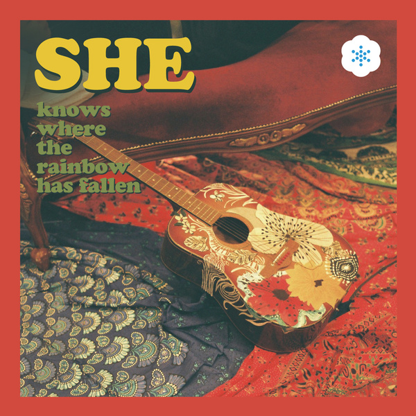

로켓트 (2014.04.28)

스피드하게 바뀌는 곡의 흐름이 특이하다. 퀸의 음악적 색깔이 묻어있으며 포크록, 레게비트등이 돋보인다.
특히 브라스와 피아노를 재즈적인 연주로 다가가 인디음악계에서의 독특한 느낌을 안겨줄 것이라고 포부를 말하였다.
봉춤을 추네 (2014.08.28)

타이틀곡 '봉춤을 추네'와 '사랑하긴 했었나요 스쳐가는 인연이었나요
짧지 않은 우리 함께 했던 시간들이 자꾸 내 마음을 가둬두네'
라는 두곡을 담은 밴드 '잔나비'의 2nd 싱글 ‘봉춤을 추네'는
지난 4월, 첫 데뷔 싱글 '로켓트'로 가요계에 자신들의 명확한 색을 칠한
'잔나비'다운 독특한 제목과 긴 제목만큼이나 신선한 스펙트럼을 제시한다.
November Rain (2014.10.29)

이번 곡은 그동안 발표했던 ‘로켓트', ‘봉춤을 추네', ‘사랑하긴 했었나요…'처럼
신나는 곡이 아닌 발라드 곡으로 감성적인 코드를 선택했다는 점이 눈길을 사로잡는다.
에너지 넘치는 기존 이미지와는 달리 감성적인 곡으로 드라마틱한 전개에서
보이는 잔나비만의 색깔이 돋보인다. 또한 엔딩 부분에서
다음 발표될 앨범의 타이틀곡을 예고하며 극적인 곡 구성에 포인트를 더했다.
색다른 음악적 ‘스포일러' 라고 봐도 좋을 것이다.
See Your Eyes (2014.12.16)

동명의 타이틀곡 ‘씨 유어 아이즈(SEE YOUR EYES)'는 잘못된 사랑의 방식으로 인해
상처받은 여자에게 바치는 곡으로, 무책임한 행동에 대한 남자의 후회를 음악적으로 표현했다.
또한 이번 앨범에는 잔나비만의 신선한 멜로디 라인과 깔끔한 편곡이 돋보이는 총 6곡의 자작곡이 수록됐으며,
지난 11월에 발표했던 세번째 싱글 ‘노벰버 레인(November Rain)'이 보너스 트랙으로 삽입됐다.
잔나비 리더 정훈은 “이번 앨범을 만들면서 가장 어려웠던 점은 타이틀곡을 정하는 것이었다”며
“잔나비만의 감성과 겨울 느낌을 함께 잘 표현해내기 위해 많은 노력을 기울였다”고 전했다.
이어 “첫 미니앨범인 만큼 심혈을 기울여 작업했다. 추운 겨울을 녹여줄 따뜻한 앨범이 될 것”이라고 덧붙였다.
MONKEY HOTEL (2016.08.04)

열다섯 사춘기시절 부터, 10년 가까이 함께해온 우리에게 첫 정규앨범은 너무 큰 의미라서
그저 딱딱한 앨범 소개보다는 조금이나마 정성을 더 들이고 싶어 이렇게 직접 글을 씁니다.
‘몽키호텔1'. 듣는 재미를 더해드리기 위해 고민을 하던 중에 스토리가 이어지는 시리즈 앨범이 나오면 어떨까?
라는 생각을 했어요. 이번 앨범은 몽키호텔 시리즈의 첫 시작이 되겠습니다. 잘 만든 드라마들을 보면 초반부에는
스토리 전개보다는 인물들의 캐릭터와 관계들을 먼저 쭈욱 보여주더라구요.
그것처럼 ‘몽키호텔1'도 시작인 만큼
서두르지 않고 각 곡마다 인물들의 인격을 부여해봤어요. 각 장면과 함께 소소한 관계들을
그려주는 10장의 삽화도 앨범 책자에 함께 담았구요.
작업하는 동안엔 정말 우리가 몽키호텔의 원숭이들인 양
역할놀이 하듯 지냈고, 그 덕분에 유치 혹은 촌스럽다는 강박에 그 동안 쓰지 못했던 표현들을
거리낌 없이 쏟아낼 수 있었고, 또 그런 덕분에 트랜드와는 한 발짝 더 멀어질 수 있게 되었고,
결국엔 우리 잔나비만의 색을 찾아낸 것 같아 뿌듯한 마음입니다.
잔나비의 첫 정규앨범 ‘몽키호텔1'
자신 있게 권합니다. 많이 사랑해주세요.
도움 주신 많은 분들 감사드립니다.
- 잔나비 최정훈 -
She (Hidden Track No.V 1월 선정곡) (2017.09.09)
유려한 멜로디 라인과 투박한 편곡의 조화, 잔나비의 전매특허인 드라마틱한 구성이 돋보이는
'She'는 아름다운 동화 한 편을 읽은 듯 쉽고 간결한 노랫말로 깊은 여운을 남기는 곡이다.
“우리가 사랑하는 혹은 우리를 사랑해주는 모든 '그녀'를 위한 노래가 되었으면 좋겠습니다.”
-잔나비 최정훈
Good Boy Twist (2018.08.13)

빠르게 흘러가는 시대의 흐름에 발을 맞추지 못하면 도태가 되어요. 그건 단지기술과 유행의 문제가 아니더라고요.
지금껏 옳은 것이라 배운, 그래서품에 안고 힘차게 뛰었던 모든 가치들이 한순간에 뒤집혀
더 이상 품을 필요도 없는 허상이 되어버린 건 나와 내 친구들만의 이야기는 아니겠죠.
우린 늘 그랬듯 두 눈 질끈 감고 더 뛰어야 할까요?
아님, 우리가 마주한 시대의 춤을 춰야 할까요?
그게 허무의 몸부림이라고 한들 말이에요.
끝끝내 춤을 추지 못할 한 소년의 이야기입니다.
-잔나비 최정훈-
Made In Christmas (feat. 이수현) (2018.12.21)

크리스마스 캐롤곡
전설 (2019.03.13)

3년 만에 돌아온 잔나비의 2집이네요. 머나먼 시간이었죠.
그 사이 많은 것들이 변했어요. 세상은 더 이상 갈망하지 않고, 치열하게 부딪히며 사랑하던 모든 관계
역시 시대답게 편리해진 듯해요. 그것도 모르고 언제나 더 뜨겁고자 했던
나와 내 친구들은 어디에 몸을 부벼야 할지 몰라 한낱 음악 속에 우리 이야기를 눈치 없이 다 담아버렸네요.
‘전설'이라는 쓸데없이 장엄하고 촌스럽기 그지없는 이름과 함께요. 투 머치 인포메이션.
그래서 빙빙 돌며 같은 말을 반복하기도 할테니 남 이야기 듣듯 무심히 들어주세요.
언젠가는 다 사라져 전설로 남을 청춘의 처절했던 시간들에 대한 이야기라며.
많은 시간 함께 기다려준 우리 팬분들께 감사 드립니다.
우리도 얼마나 많이 기다려왔는지 몰라요.
-잔나비 최정훈
잔나비 소곡집 l (2019.11.06)

그리운 건 많을수록 좋아!
지나간 무언가에 대한 이야기만 줄기차게 늘어놓았던 그동안의 우리에 대해서
내 스스로도 변명이 필요했어요. 그게 곧 이 노래집에 수록될 곡을 추리는 주제가 되었고요.
그다지 진취적이지도 특별나지도 않은 머물러있던 그대로.
그동안 보여드렸던 잔나비의 음악 그대로를 담아보았습니다. 그리운 것들 마음껏
주워 담을 수 있는 그릇 같은 곡들이에요.
개인적으로는, 어떤 앨범보다 의미가 짙어요.
잔나비 음악의 청사진을 담게 될 3집에 대한 욕심과 집념은 잠시 제쳐두고,
지나칠 뻔한 우리의 본분을 깨닫게 해 준 고맙고 착한 앨범입니다.
-잔나비 최정훈